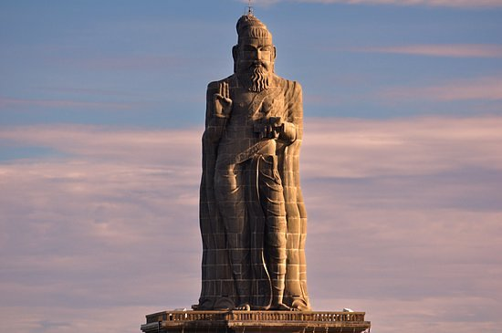
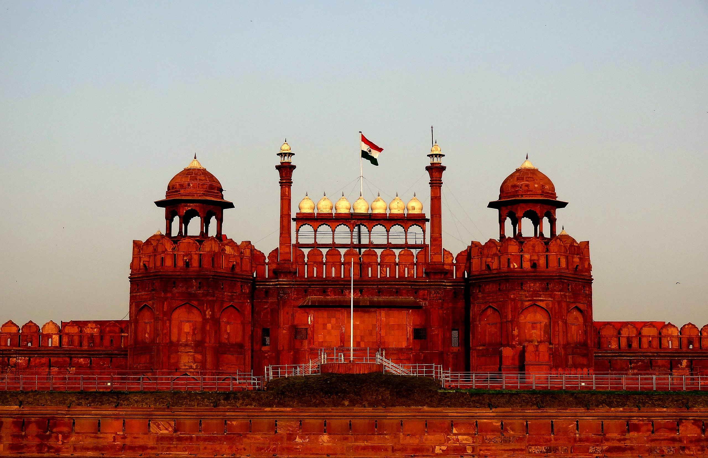
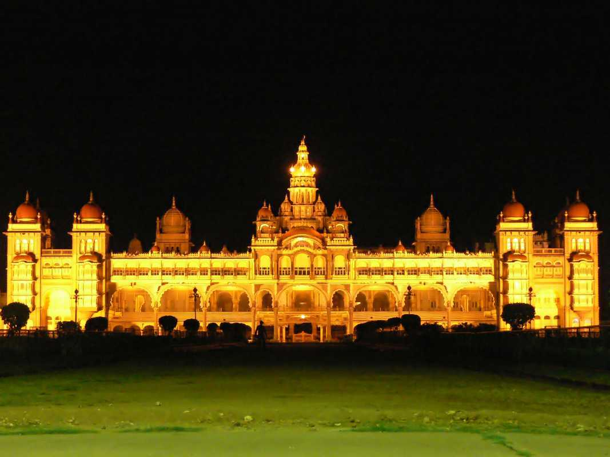

Taj Mahal

The Taj Mahal is located on the right bank of the Yamuna River in a vast Mughal garden that encompasses nearly 17 hectares, in the Agra District in Uttar Pradesh. It was built by Mughal Emperor Shah Jahan in memory of his wife Mumtaz Mahal with construction starting in 1632 AD and completed in 1648 AD, with the mosque, the guest house and the main gateway on the south, the outer courtyard and its cloisters were added subsequently and completed in 1653 AD. The existence of several historical and Quaranic inscriptions in Arabic script have facilitated setting the chronology of Taj Mahal. For its construction, masons, stone-cutters, inlayers, carvers, painters, calligraphers, dome builders and other artisans were requisitioned from the whole of the empire and also from the Central Asia and Iran. Ustad-Ahmad Lahori was the main architect of the Taj Mahal.
The Taj Mahal is considered to be the greatest architectural achievement in the whole range of Indo-Islamic architecture. Its recognised architectonic beauty has a rhythmic combination of solids and voids, concave and convex and light shadow; such as arches and domes further increases the aesthetic aspect. .
Thiruvalluvar statue
The combined height of the statue and pedestal is 133 feet (41 metres), denoting the 133 chapters of the Tirukkural. This includes 95 feet (29 metres) sculpture of Valluvar standing upon a 38 feet (12 metres) pedestal that represents the 38 chapters of Virtue, the first of the three books of the Kural text. The statue itself represents the second and third books of the Kural text, namely, Wealth and Love. The whole design signifies that wealth and love be earned and enjoyed on the foundation of solid virtue.[1] The right hand of the statue with three fingers pointing skywards signifies the three cantos of the Kural text, namely, Aram, Porul, and Inbam (Virtue, Wealth, and Love, respectively), combined.[2] The head of the statue stands at a height of 61 metres (200 ft) above the sea level.[3] The statue, with its slight bend around the waist is reminiscent[citation needed] of a dancing pose of the Hindu deities like Nataraja. The statue weighs 7,000 tonnes (6,900 long tons; 7,700 short tons).[4] The monument is regarded as a cultural fusion because of its juxtaposition beside the Vivekananda Rock Memorial. Built-in conformation with traditional Indian architecture, the statue has provision to provide a hollow portion inside from toe to scalp. Visitors, however, will not be allowed to scale, but instead be permitted to climb up to the foot of the statue at a height of 12 metres (38 ft).[2].
Chech this outBrihadisvara Temple
Brihadishvara Temple, called Rajarajesvaram (lit. 'Lord of Rajaraja') by its builder, and known locally as Thanjai Periya Kovil (lit. 'Thanjavur Big Temple') and Peruvudaiyar Kovil, is a Shaivite[3][4] Hindu temple built in a Chola architectural style[5] located on the south bank of the Cauvery river in Thanjavur, Tamil Nadu, India.[1][6] It is one of the largest Hindu temples and an exemplar of Tamil architecture.[7] It is also called Dakshina Meru (Meru of the South).[8] Built by Chola emperor Rajaraja I between 1003 and 1010 CE, the temple is a part of the UNESCO World Heritage Site known as the "Great Living Chola Temples", along with the Chola-era Gangaikonda Cholapuram temple and Airavatesvara temple, which are about 70 kilometres (43 mi) and 40 kilometres (25 mi) to its northeast respectively.[9] The original monuments of this 11th-century temple were built around a moat. It included gopura, the main temple, its massive tower, inscriptions, frescoes, and sculptures predominantly related to Shaivism, but also of Vaishnavism and Shaktism. The temple was damaged in its history and some artwork is now missing. Additional mandapam and monuments were added in the centuries that followed. The temple now stands amidst fortified walls that were added after the 16th century.[10][11] Built using granite, the vimana tower above the shrine is one of the tallest in South India.[6] The temple has a massive colonnaded prakara (corridor) and one of the largest Shiva lingas .
Chech this outRed Fort
The Red Fort is a historical fortification in the old Delhi area. Shah Jahan constructed it in the year 1639 as a result of a capital shift from Agra to Delhi. Used as the main residence of the emperors of the Mughal dynasty, this imposing piece of architecture derives its name from its impregnable red sandstone walls. In addition to accommodating the emperors and their households, it was the ceremonial and political centre of the Mughal state and the setting for events critically impacting the region. Today, this monument is home to several museums that have an assortment of precious artefacts on display. Every year, the Indian Prime Minister unfurls the national flag here on the Independence Day.
Formerly known as Quila-e-Mubarak or the Blessed Fort, the Red Fort lies along the banks of the river Yamuna, whose waters fed the moats surrounding the fort. It was a part of the medieval city of Shahjahanabad, popularly known today as 'Old Delhi'.
Mysore palace
Mysore Palace, also known as Amba Vilas Palace, is a historical palace and a royal residence (house). It is located in Mysore, Karnataka, India. It used to be the official residence of the Wadiyar dynasty and the seat of the Kingdom of Mysore. The palace is in the centre of Mysore, and faces the Chamundi Hills eastward. Mysore is commonly described as the 'City of Palaces', and there are seven palaces including this one. However, the Mysore Palace refers specifically to the one within the new fort. The land on which the palace now stands was originally known as mysuru (literally, "citadel"). Yaduraya built the first palace inside the Old Fort in the 14th century, which was set ablaze and reconstructed multiple times. The Old Fort was built of wood and thus easily caught fire, while the current fort was built of stone, bricks and wood. The current structure was constructed between 1897 and 1912, after the Old Palace burnt down, the current structure is also known as the New Fort. Mysore Palace is one of the most famous tourist attractions in India, after the Taj Mahal, with more than six million annual visitors.[1]
Chech this out